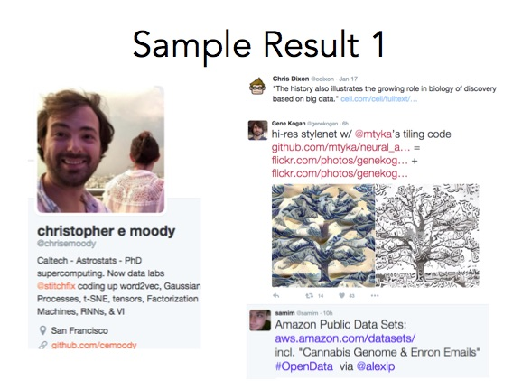
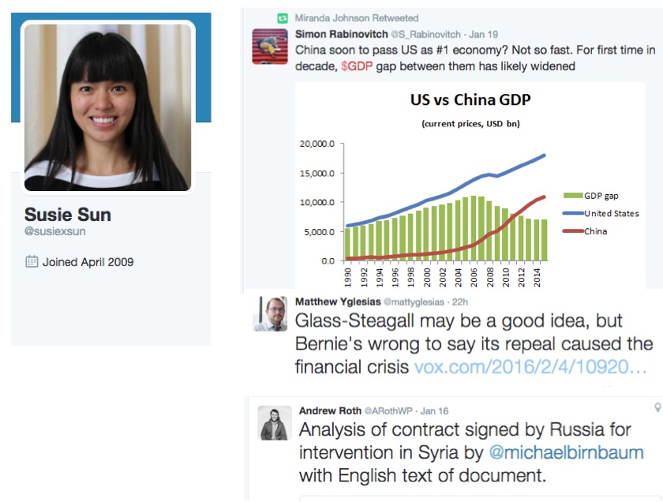
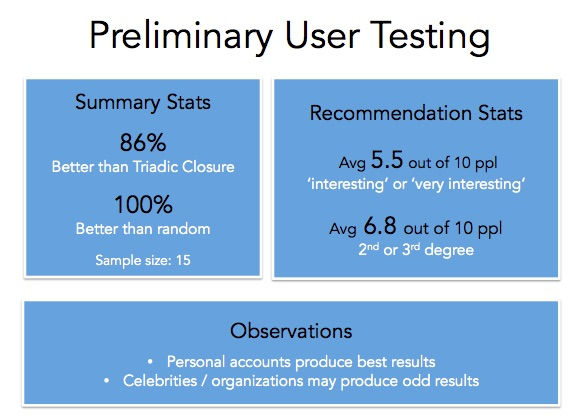

A: Who-To-Follow is a recommender for high quality content on Twitter. You enter a Twitter handle and the algorithm returns a list of new people with similar interests. You can put in your own handle, a friend's handle, or the handle of someone you find interesting.
Try Who-To-Follow here.
A: The Who-To-Follow algorithm is an ensemble method using Graph Theory and NLP. The algorithm utilizes retweets to find quality and then TF-IDF and cosine similarity to find similiar interests. I break down the algorithm step by step below.
Voila! Now you have a list of 10 people that are high quality and shares your interests. Fun!
Try it for yourself here.
A: Here is sample output from Chris Moody - he gave a Data Science talk recently that I enjoyed.
As you can see, the recommendations are people tweeting about big data, neural networks, public data sets... all things you'd expect a Data Scientist such as Chris to be interested in. Chris is only currently following 1 of the 3 recommendations.
Here is sample output for me. I am interested in Economics, World News, and Public Policy.. and it shows!
I did some extremely preliminary user testing and the results are very promising! 86% of users preferred Who-To-Follow to Triadic Closure. Grand!
Why not give Who-To-Follow a try?
I am always surprised by how much information is out there and how hard it is to discover new content. There are thousands of news articles being produced a day and it's hard to find the 10 that would actually enrich my life. Same goes for books, movies, and podcasts.
Google helps you to find things when you know exactly what you're looking for, but what interests us as humans isn't always linear. Moreover, our current sources, such as Facebook, can become echo chambers that confirm our beliefs rather than introduce new evidence.
My personal theory is that the content discovery problem can be solved by a combination of a filtering layer of people (perhaps the ultimate neural network), personalization, and machine learning. This project is my first attempt to use a social layer to filter content and I hope to continue experimentation.